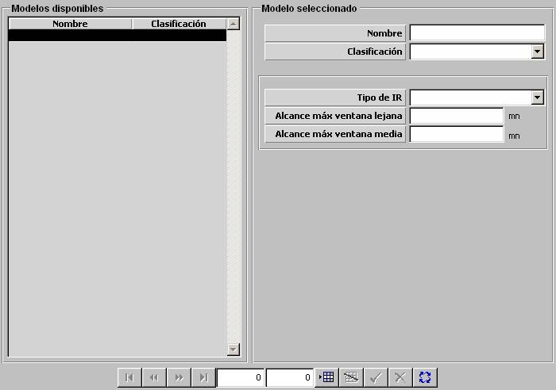

Infrarrojo

Descripción de los parámetros:
Tipo de IR: Puede tomar los siguientes valores:
Este parámetro determina si el Infrarrojo trabaja en ventana media, lejana o en ambas. El alcance de los sensores infrarrojo de ventana media depende de la velocidad, tamaño y tipo de propulsión del contacto. El alcance de los de ventana lejana no depende de la velocidad y tamaño del contacto.
Alcance Máximo Ventana Lejana: Límite máximo para el alcance del sensor infrarrojo cuando es de ventana lejana. Este parámetro sólo puede ser introducido si Tipo de IR es tipo LEJANA o DUAL.
Unidades: millas
Rango: 0 – 100
Alcance Máximo Ventana Media: Límite máximo para el alcance del sensor infrarrojo cuando es de ventana media. Este parámetro sólo puede ser introducido si Tipo de IR es tipo MEDIA o DUAL.
Unidades: millas
Rango: 0 – 100